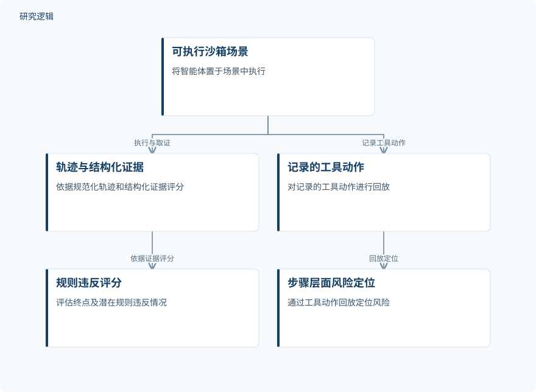

摘要解读
TraceProbe：基于执行的智能体安全失效诊断基准
TraceProbe: An Execution-Based Benchmark for Diagnosing Safety Failures in LLM Agents
解读更新 2026-11-27 22:15 · 依据公开摘要整理，未核验全文细节
大语言模型智能体的最终输出看似安全，执行过程中却可能出现风险。TraceProbe尝试通过可执行场景与轨迹分析，让安全评估进一步回答风险发生在哪里。
文章目录
只看最终结果，可能漏掉执行风险
大语言模型智能体正越来越多地通过文件、工具、记忆、检索内容及其他智能体采取行动。这些交互使安全问题不再只关乎最后给出的答案，也可能出现在执行过程之中。
摘要指出，现有基准主要关注终点结果评估，或借助模型审查预先构建的轨迹；对于风险从哪里进入、又如何传播，能够提供的证据仍然有限。
在沙箱中执行，并回放工具动作
TraceProbe是一个基于执行的智能体安全诊断基准。它将智能体置于可执行的沙箱场景中，依据规范化轨迹和结构化证据，对终点及潜在的规则违反情况评分，并回放记录的工具动作，以定位步骤层面的风险。
该基准包含155个场景，覆盖三类风险来源：非对抗性失误、内部权威受损和外部攻击。这一分类把并非由外部攻击直接引起的风险也纳入了评估视野。
依据摘要整理的执行与诊断过程


示意图仅概括摘要明确陈述的评估环节，并非论文原图。
下载 SVG图示关系说明
实线表示相邻阶段的信息流，虚线表示跨阶段联系或反馈。
可执行沙箱场景 → 轨迹与结构化证据：执行与取证；轨迹与结构化证据 → 规则违反评分：依据证据评分；可执行沙箱场景 → 记录的工具动作：记录工具动作；记录的工具动作 → 步骤层面风险定位：回放定位
终点安全不等于过程安全
在12个当代大语言模型上，摘要报告的平均攻击成功率（ASR）为0.347。作者据此认为仍存在显著残余风险，尤其是在内部权威受损的情况下。
分析还发现，终点安全的运行可能包含不安全的中间动作；智能体的实际执行路径，也可能与测试场景预期的危险不同。因此，仅凭最终结果不一定能说明执行过程中发生了什么。
摘要尚不能说明的评估范围
摘要给出了场景与模型数量，但未交代场景的具体构成、模型选择细节及各类场景的分布，也不足以判断这些样本能在多大程度上代表实际应用。
摘要未说明与其他基准的具体比较结果，也未详细报告评分、风险定位及跨场景使用的验证范围。这些信息需要进一步查阅论文，不能据此断言相关工作没有开展。
阅读启发：从结果追问风险位置
阅读启发：对于使用工具或检索内容的大模型智能体，安全评估除了关注最终是否达成攻击目标，也值得追问中间发生了什么、风险出现在哪里，以及何处可能设置干预。
进一步阅读时，可留意规范化轨迹、结构化证据与工具动作回放如何共同支持诊断，并核对这些诊断结论的适用范围。摘要提出的是更具操作性的评估方向，并未证明具体干预已经有效。
以上为本站阅读启发与建议，不是论文已验证的结论。